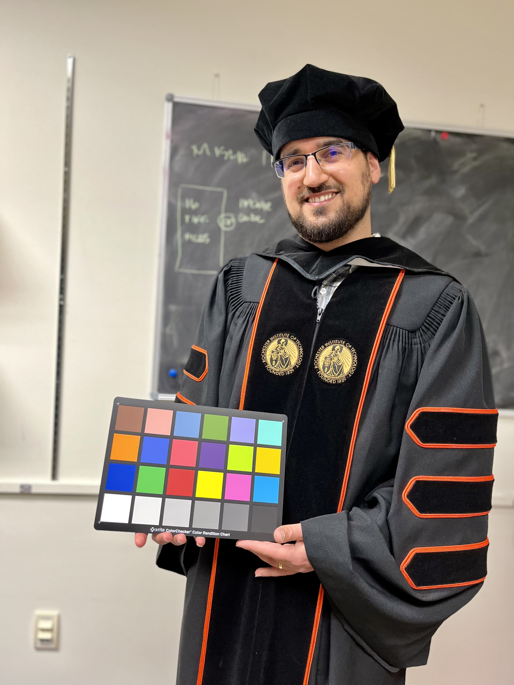

Camera ISP & Imaging Pipelines
Consulting and technical support for camera ISP, imaging pipeline evaluation, workflow design, and practical imaging system analysis.
Morteza Maali Amiri, Ph.D.
Color & Imaging Scientist
Camera ISP • Color & Imaging Science • AI/ML for Imaging • HDR • Hyperspectral / Multispectral Imaging
I am Morteza Maali Amiri, Ph.D., a color and imaging scientist with experience across both industry and academia. My work spans camera ISP, color reproduction, HDR imaging, image and video quality evaluation, skin tone reproduction, hyperspectral and multispectral imaging, computer vision, machine learning, deep learning, psychophysical studies, AR/VR/MR imaging, and custom imaging tools.

About
Morteza Maali Amiri is a color and imaging scientist with advanced training in Imaging Science and Color Science from Rochester Institute of Technology. His work has addressed problems in color reproduction, camera and imaging workflows, HDR imaging, spectral and colorimetric recovery, image registration, hyperspectral and multispectral imaging, computer vision, and machine learning for specialized imaging applications.
He currently works as a Color / Imaging Scientist through DigitalFish on contract with Meta, contributing to projects involving color perception and reproduction, camera and display-related evaluation, image and video quality, AR/VR/MR perception, skin tone reproduction, psychophysical experiments, and automated capture workflows.
In addition to his scientific and engineering work, he also provides consulting for companies, researchers, and specialized teams that need support with camera ISP, imaging analysis, perceptual evaluation, spectral imaging, AI / machine learning for imaging, and custom technical development in Python and MATLAB.
Expertise
Consulting and technical support for camera ISP, imaging pipeline evaluation, workflow design, and practical imaging system analysis.
Color reproduction, color appearance, camera and display characterization, perceptual analysis, and human color vision.
HDR imaging, image and video quality evaluation, perceptual assessment, and vision-focused workflow analysis.
Machine learning, deep learning, computer vision, and applied AI workflows for imaging analysis, evaluation, and tool development.
Skin tone reproduction, psychophysical experiments, perceptual evaluation, and imaging studies related to human appearance, display experience, and AR/VR/MR systems.
Hyperspectral and multispectral imaging, spectral reflectance recovery, colorimetric characterization, and scientific imaging workflows.
Experience
DigitalFish, on contract with Meta
Working on color perception and reproduction across Meta products, HDR imaging, image and video quality analysis, AR/VR/MR perception, skin tone reproduction, psychophysical experiments on Android-based devices, and automated capture workflows using Python, scripting, and ADB-connected systems.
Rochester Institute of Technology
Worked on affordable multispectral imaging systems, colorimetric characterization, 3D class-map workflows for polychrome sculptures, and image registration for cultural heritage and scientific imaging applications.
NVIDIA
Worked on autonomous-vehicle camera topics including image quality analysis, image processing, machine learning, deep learning, and color reproduction.
NVIDIA
Worked on image quality analysis, noise quantification, image processing, machine learning, and color reproduction for automotive camera projects.
Research
Testimonials
I welcome feedback from collaborators, clients, and colleagues. Submitted testimonials are reviewed before being added here.
“Morteza was able to help me with the hyperspectral imaging problem that I had. He is very good at what he is doing.”
“He is very competent in coding.”
“Example testimonial can go here until you add a new one.”
Contact
If your team is working on camera ISP, color science, image quality, HDR imaging, hyperspectral or multispectral imaging, AI / machine learning for imaging, AR/VR/MR imaging, perceptual evaluation, or custom imaging tools, feel free to reach out. I am available for consulting, technical review, project-based collaborations, and specialized development work.
mm2391@rit.edu